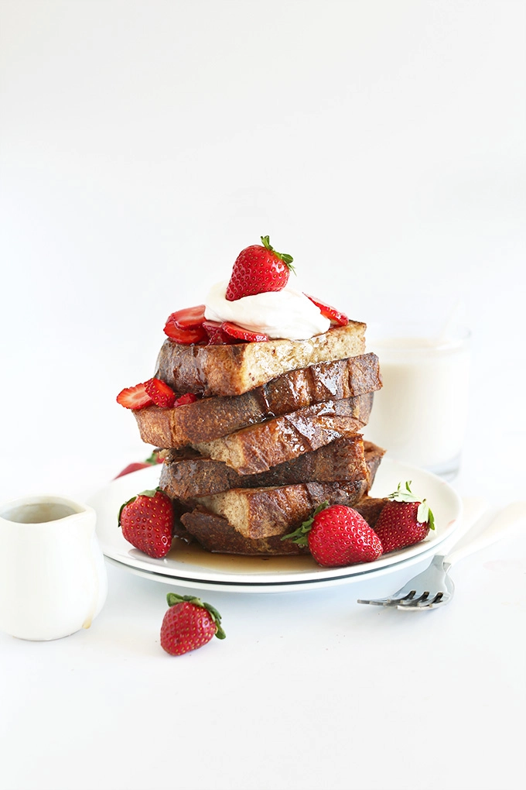

Vegan French Toast

Description
A dreamy, simple, perfectly sweet french toast that's completely vegan!
Ingredients
- 1 heaping Tbsp chia seeds
- 1/2 Tbsp agave nectar or maple syrup
- 1 cup unsweetened almond milk
- 1/2 tsp gorund cinammon
- 1/2 tsp vanilla extract
- 4-5 slices sturdy bread
Steps
- Mix all ingredients except the bread in a large, shallow bowl. Place in the fridge to activate for 10-20 minutes.
- Preheat griddle to a medium heat(350 F) and grease with 1 Tbsp vegan butter or coconut oil.
- Dip each slice of bread in the batter for about 20 seconds on each side. If your bread is dry, leave it in a little longer.
If you're using sandwhich bread, it should only need 25-30 seconds total to soak.
- Place on griddle and cook until golden brown on the underside. Carefully flip and cook until the other side is golden brown.
- Top with desired toppings: I went with coconut whipped cream, strawberries, and maple syrup.